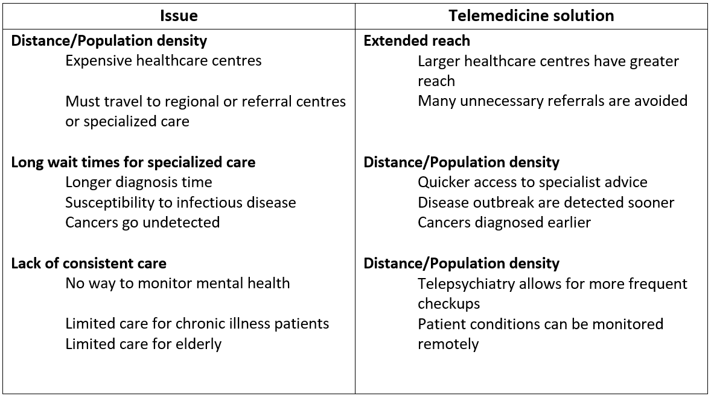
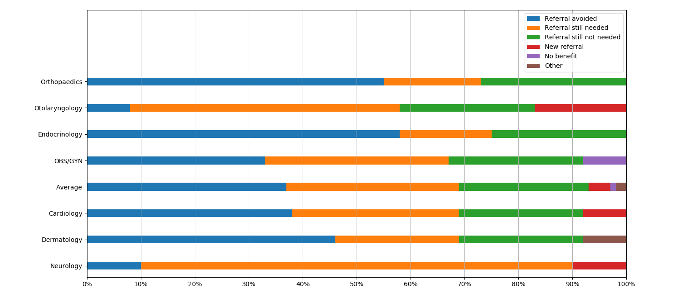

Telemedicine has proven to be viable strategy for extending the reach of a healthcare system and improving the quality of care. The Nunavut department of health has begun to implement telemedicine into its healthcare system but it is still very basic. This page will specifically look at how a full-scale implementation of telemedicine could improve the Nunavut Healthcare system and what changes can be made.
How telemedicine could benefit Canada's north
Many of the challenges the healthcare systems in Canada’s north face can be solved by telemedicine solution.
HEALTH CARE ISSUES VS. SOLUTIONS PROVIDED BY TELEMEDICINE
Cost analysis
Cost is major limiting factor in any healthcare system. Funds are required to build and operate healthcare facilities, pay staff wages, subsidize medical travel, and much more. Minimizing expenditures should be a major focus when considering how to improve a healthcare system.
Telemedicine is a cost-effective solution for providing far-reaching healthcare. eConsult, part of the Champlain BASE project, has been shown to provide significant savings in medical expenditures. A cost analysis of 165 eConsult cases in Nunavut between August 2014 and April 2016 gives an idea of the savings in health expenditures that could be had by implementing telemedicine in full-scale in Nunavut.
The most significant way that eConsult reduced cost was by avoiding face-to-face referrals. The chart below shows the impact that eConsult had on referrals for each speciality.
Impact of eConsult on need for face-to-face referrals [14]
On average 38% of face-to-face referrals were avoided because of the consultation. In 31% of cases the need for a referral was confirmed and 4% of cases resulted in a new referral. Eliminating referrals results in savings for government by avoiding medical travel expenses and also benefits the patient by reducing missed work and wages. The following table contains the estimated savings and expenses created by eConsult.
SAVINGS AND EXPENSES CREATED BY ECONSULT IN NUNAVUT [14]

Telemedicine can provide significant savings in a northern healthcare system because of the potential to reduce travel expenses for out-of-territory referrals. The savings provided can be reallocated to improve other healthcare programs leading to greater healthcare throughout the region.
Limitations
Although there are obvious benefits to implementing telemedicine throughout healthcare systems in the Canadian north there are also several limitations.
-
Even though telemedicine is capable of providing widespread healthcare it is still less effective than face-to-face appointments. In many cases telemedicine can function as a starting point for diagnosing health issues but more complicated treatments and procedures will still require patients to visit major health centres.
-
Many northern communities may not have the communications infrastructure to support a telemedicine program.
The cost to upgrade communications networks in the region can be balanced by the savings in health expenditures. Investing in improved communications infrastructure in the north will most likely lead to greater savings in health expenditures in the future to compensate.
Telemedicine is a viable option for improving healthcare in northern Canadian communities. Northern healthcare systems currently face challenges with cost, accessibility, wait times, and reliability. Although these issues cannot be eliminated, telemedicine provides real solutions for improvement. Implementation of telemedicine in Canada’s north has already begun but is very limited. A full-scale adoption of telemedicine, along with improved communication networks, can potentially create positive changes in mental health, cancer diagnosis, infectious disease control, chronic illness treatment, medical expenditures, and more.